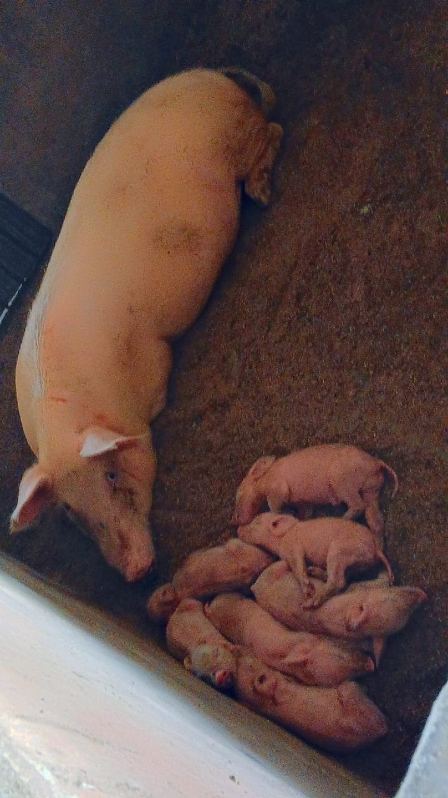
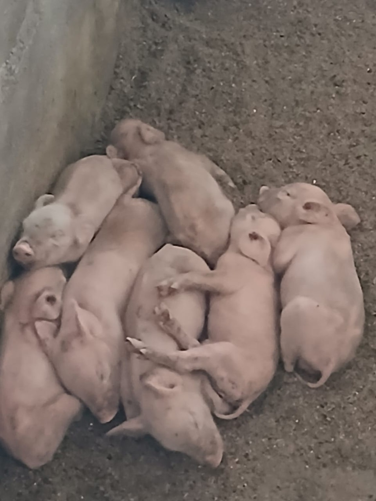
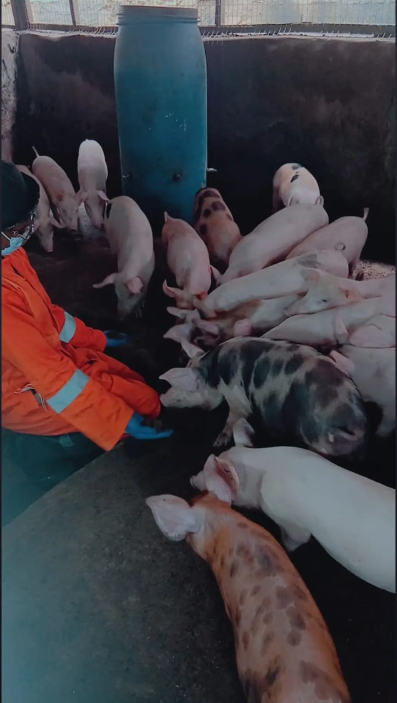
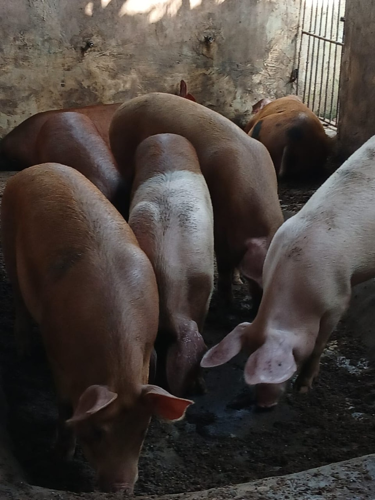
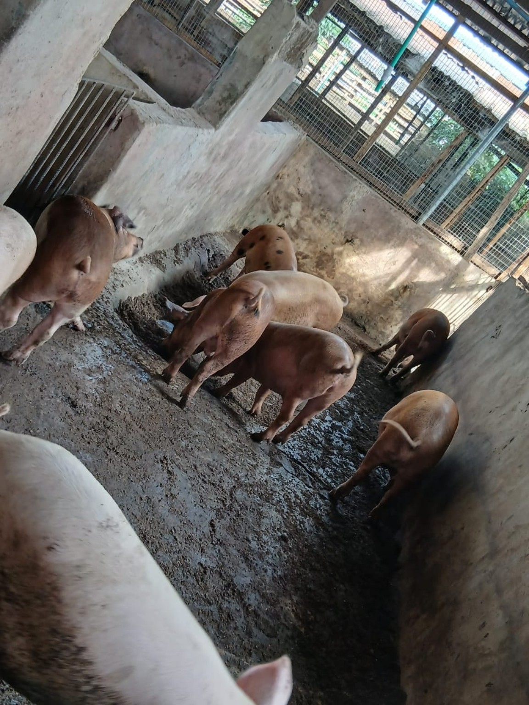
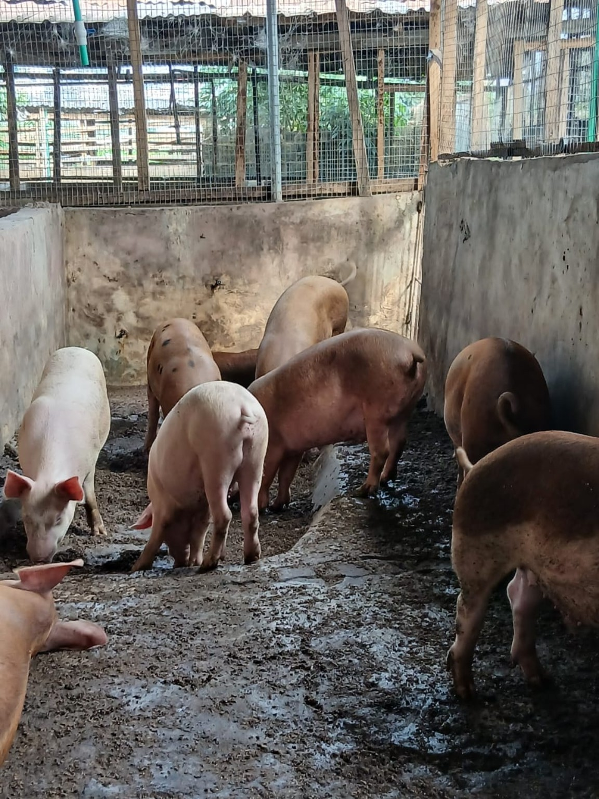

Welcome to BuskyRash Multi Biz Ltd
Growing Businesses. Managing Assets. Connecting People.
Agriculture • Property & Facility Management • Telecommunications
Contact UsAbout Us
BuskyRash Multi Biz Ltd is a Nigerian multi-business company delivering reliable services across agriculture, property and facility management, and telecommunications.
Through our agricultural operations, we focus on pig farming and livestock management. Our property division supports property owners with rental and tenant management, rent collection, maintenance, cleaning and inspections, while our telecommunications services provide convenient airtime and mobile data solutions.
Across every part of our business, we are committed to professionalism, reliability and building lasting relationships with our customers and partners.
Our Services
Pig Farming & Livestock
Quality pigs raised with proper care and professional farm management.
Learn More →Property & Facility Management
Rental property management, tenant management, rent collection, maintenance, cleaning and inspections.
Learn More →Airtime & Data Services
Convenient airtime and mobile data services for major Nigerian telecommunications networks.
Learn More →What We Do
Pig Farming & Livestock
Our farming operations focus on the responsible raising and management of pigs, including piglets, weaners, growers, finishers and breeding stock.
- Pig production and management
- Growers and finishers
- Breeding sows and boars
- Livestock sales
Property & Facility Management
We provide practical property and facility management services for landlords and property owners.
- Rental property management
- Tenant management
- Rent collection
- Maintenance and repairs
- Cleaning services
- Property inspections
Airtime & Data Services
We provide convenient airtime and mobile data services for customers across major Nigerian mobile networks.
- MTN airtime and data
- Airtel airtime and data
- Glo airtime and data
- T2 airtime and data
Our Farm
A look at our pig farming and livestock operations at BuskyRash Multi Biz Ltd, from piglets and breeding stock to growers and finishers.






Our Farm in Action
See some of our breeding and piglet-care activities at BuskyRash Farm.
Contact Us
Get in touch with BuskyRash Multi Biz Ltd.
Head Office
49, Alhaji Adebowale Street,
Pleasure, Oke-Odo,
Lagos State, Nigeria
Farm
Oke-Aro Farm Estate,
Giwa Oke-Aro,
Ogun State, Nigeria